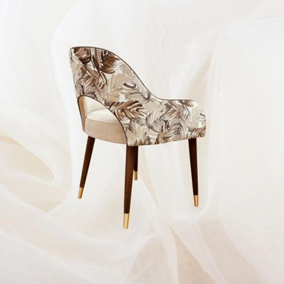

TS Estofo & Décor / Pormenores
O que faz a diferença, de perto.
Um padrão nas costas, um tecido liso à frente, a forma de um braço. Veja os modelos e os pormenores apresentados pela TS Estofo & Décor.

Carminho · O padrão nas costas
UM MODELO, DOIS PONTOS DE VISTA
O detalhe está na combinação.
As costas com padrão e a frente lisa fazem parte da proposta da Carminho. Mude o ponto de vista para ver a peça de perto.
Fotografias publicadas pela marca. Cores e opções a confirmar com a equipa.
Falar sobre a CarminhoEscolher a combinação
Carminho e Martim apresentam opções de tecido distintas para a frente e para as costas.
Pensar no conjunto
O Amadeus combina cadeirão e pousa-pés, com opções próprias de revestimento e almofadas.
Conversar sobre a peça
Os modelos têm pedidos de informação e personalização no website atual. Confirme sempre as opções diretamente com a equipa.